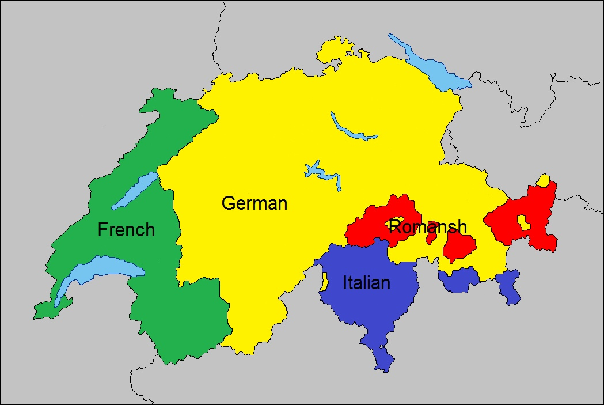

1. O país dos relógios
A Suíça é mundialmente famosa pela fabricação de relógios de alta qualidade. Marcas como Rolex, Omega e Patek Philippe têm suas origens no país.
2. Chocolate suíço

O chocolate suíço é considerado um dos melhores do mundo. A Suíça foi pioneira na criação do chocolate ao leite e é lar de marcas icônicas como Lindt e Toblerone.
3. Quatro idiomas oficiais
A Suíça possui quatro idiomas oficiais: alemão, francês, italiano e romanche. Essa diversidade linguística reflete a rica cultura do país.